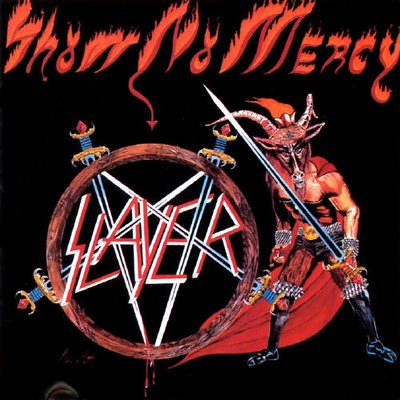
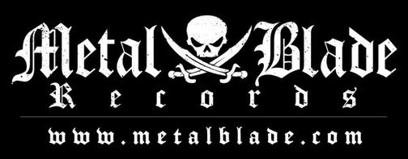

Show No Mercy é o álbum de estreia da banda norte-americana de thrash metal Slayer, foi lançado em 3 dezembro de 1983 pela Metal Blade Records.
O albúm tem uma sonoridade que segundo o vocalista e baixista Tom Araya teve influências de bandas como:
O album possui uma produção de baixa qualidade, o que foi muito criticado, mas contribuiu para a sua indentidade que possuia uma temática maligna e satânica, o que ganhou muita atenção dentro da comunidade do metal, oque mais tarde veio a influenciar novas bandas e até novos genêros dentro do metal
Apesar da banda não ter tido tempo para vender álbuns durante a digressão, Show No Mercy tornou-se o mais vendido da Metal Blade Records. Cinco mil cópias era a média da empresa editora e Show No Mercy vendeu entre 15 500 a 20 000 cópias nos Estados Unidos;
e mais de 15 000 fora desse território, isto porque a Metal Blade tinha direitos internacionais. O sucesso fez com que o produtor Brian Slagel quisesse que a banda lançasse um novo álbum e um novo EP.

Show no Mercy polarizou opniões quando foi editado, enquanto a imprensa especializada europeia do underground como a revista britânica Metal Forces celebrou o disco como um marco e um sopro de inovação, a grande imprensa e as principais revistas de rock da época detestaram o trabalho.
Para os críticos tradicionais acostumados ao hard rock e heavy metal clássico a banda soava como barulho caótico, amador e deritativo, destacando a sua produção de baixa qualidade devido ao baixo orçamento da banda na epoóca.
Por outro a comunidade underground aclamou o album, devido a sua agressivade e velocidade, a produção de baixa qualidade foi considerada autêntica, e as imagens satânicas serviram de choque e rejeição ao mainstream
A seguir a nota de alguns críticos: